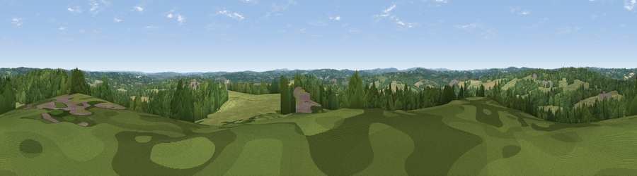

Viewpoint near Sponden
#37373 in England · top 38% of its area beats it · near SpondenWhere it is
The exact computed spot (TQ 78775 28675). Click the marker for map links.
The view, rendered

A 360° render of this exact spot computed from the terrain model, tree cover and land cover — summer colours, afternoon light, calibrated against photographs of famous viewpoints. Real trees, hedges and buildings will differ in detail.
The panorama
Grey silhouette: terrain skyline in each direction (720 bearings, Earth curvature and refraction included). Dashed green: skyline with trees (+15 m) and buildings (+8 m) as obstacles. Blue strip: how far the ground is visible on each bearing.
Where the view opens
Wedge length = distance to the farthest visible ground on that bearing (vegetation-aware). Rings at 10, 25 and 50 km.
What fills the view
46% grassland · 37% woodland · 16% cropland · 1% built-up
Angular shares of the visible panorama (visual magnitude), not map area. Landscape diversity 0.47 (0–1 Shannon).
Key numbers
More beautiful places nearby
The staircase of upgrades: each row has a higher view potential than everything closer. Driving times are estimates from straight-line distance, calibrated against real road routing — check an actual route before setting out.
| Place | Direction | Drive | Score |
|---|---|---|---|
| Viewpoint near Iden Green | N · 3 km | ~8 min | 30.6 |
| Viewpoint near Salehurst | SW · 5 km | ~11 min | 31.9 |
| Viewpoint near Staplecross | SSW · 5 km | ~11 min | 33.2 |
| Viewpoint near Staplecross | S · 5 km | ~11 min | 37.4 |
| Silver Hill | WSW · 5 km | ~12 min | 39.4 |
| Viewpoint near Beckley | ESE · 7 km | ~15 min | 42.4 |
| Viewpoint near Sissinghurst | N · 11 km | ~21 min | 42.6 |
| Viewpoint near Netherfield | SW · 12 km | ~23 min | 60.3 |
51.02964, 0.54811 · source: screening · position refined by local search. Computed location — check access rights before visiting.